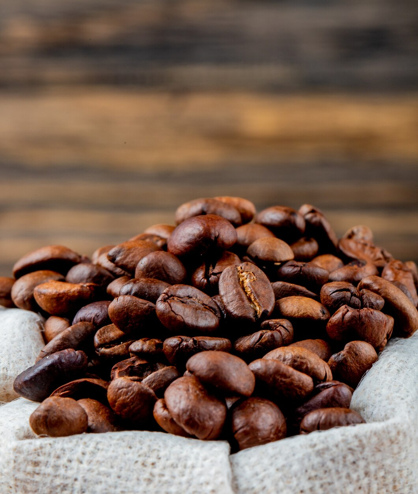
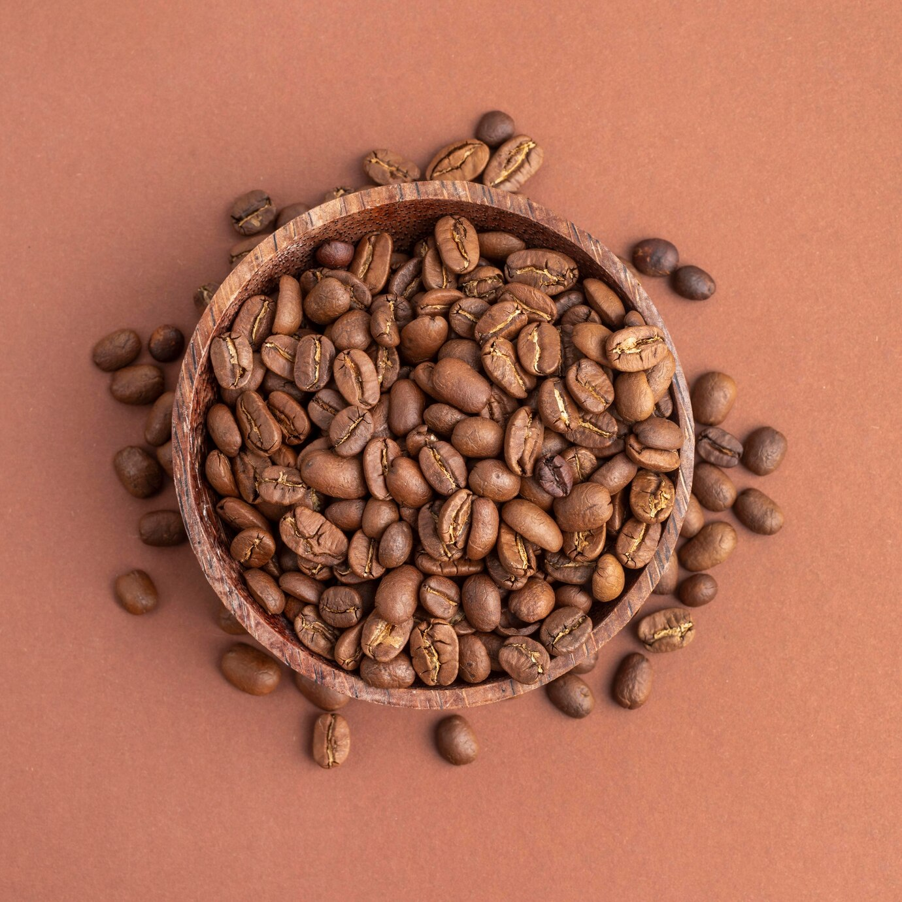
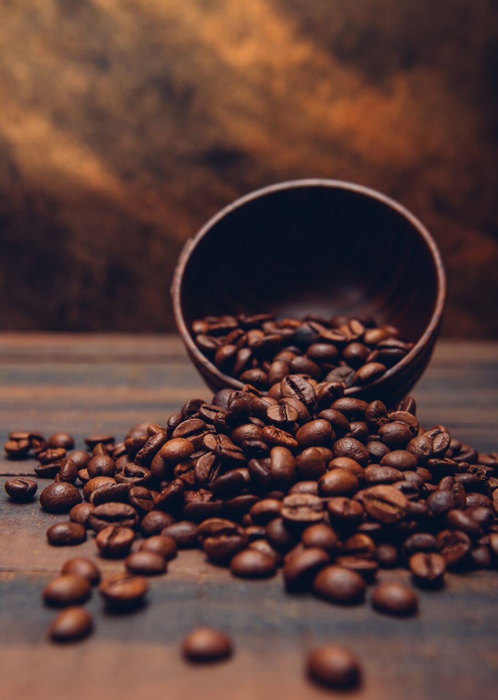

様々なフレーバー
コーヒーの歴史は何千年にも遡り、多くの興味深い事実がある。コーヒー豆の生産は世界経済において大きなシェアを占めている。世界中にある品種の正確な数を数えるのは難しく、専門家は100種類以上と呼んでいる。各品種にはそれぞれ特徴的な風味、香り、後味があり、それが飲み物のユニークな個性を作り出している。風味の形成とコーヒー豆の生産価格は、農園の場所、気候条件、土壌、水分レベル、収穫時期、豆の加工方法によって左右される。
Coffee
-
Arabica
アラビカ種は柑橘類、フルーティーな香り、チョコレートの魅惑的なアロマ、ほのかな酸味のある明るい風味 - これらはアラビカ種の特徴であり、何百万人ものコーヒー愛好家に愛されています。
-
Robusta
ロブスタ種はアラビカ種に比べ、よりシンプルで苦味が強く、強い風味を持っています。カフェインが1.5倍近く多いため、爽快感がより強く感じられます。しかし、ロブスタは微妙な香りと風味の遊びがありません。そのため、低級品とされている。
-
Blend
ブレンドコーヒーによく見られるフレーバーノートには、チョコレート、ナッツ、キャラメル、フルーツや花の香りがある。出来上がったコーヒーの味は、酸味とコクのバランスがとれた、なめらかでまろやかなものになります。ブレンドコーヒーの利点 ブレンドコーヒーの主な利点の一つは、その多様性です。